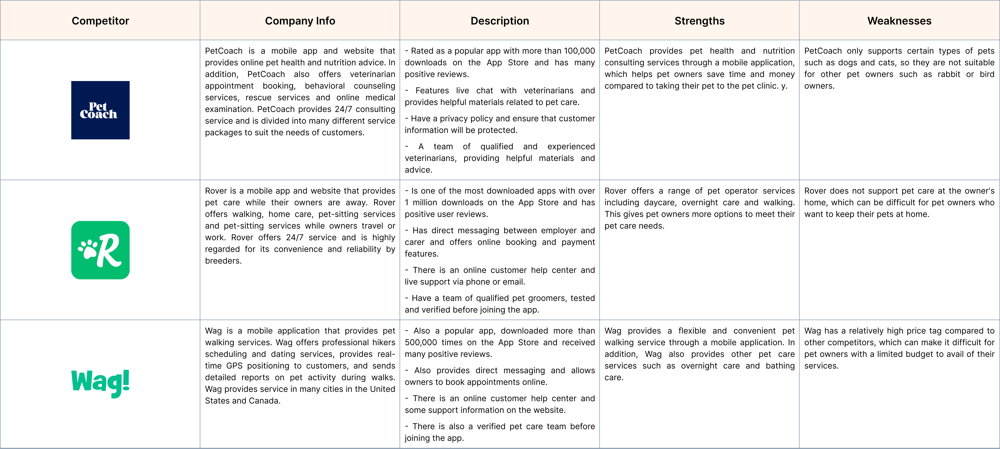
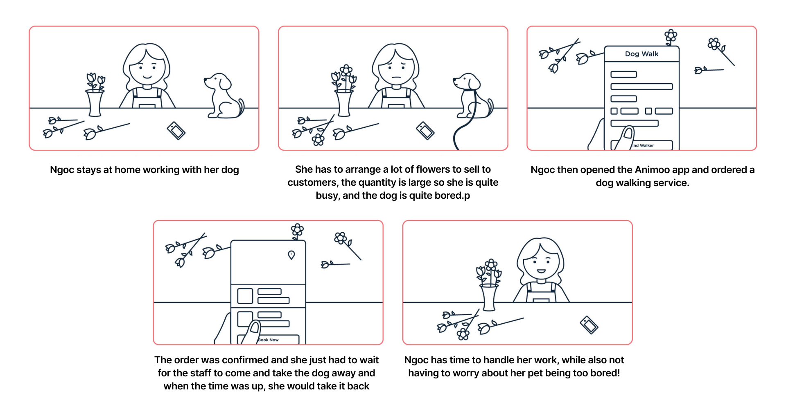
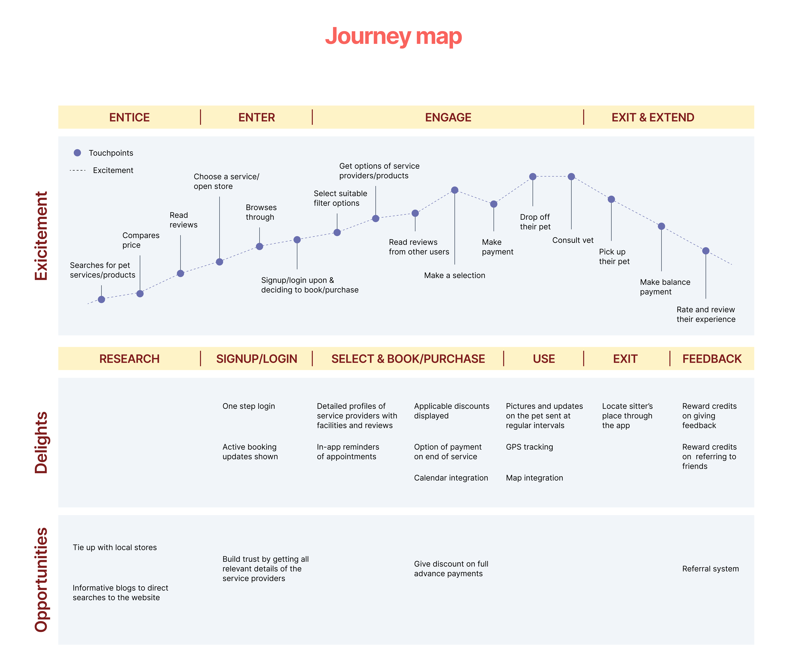
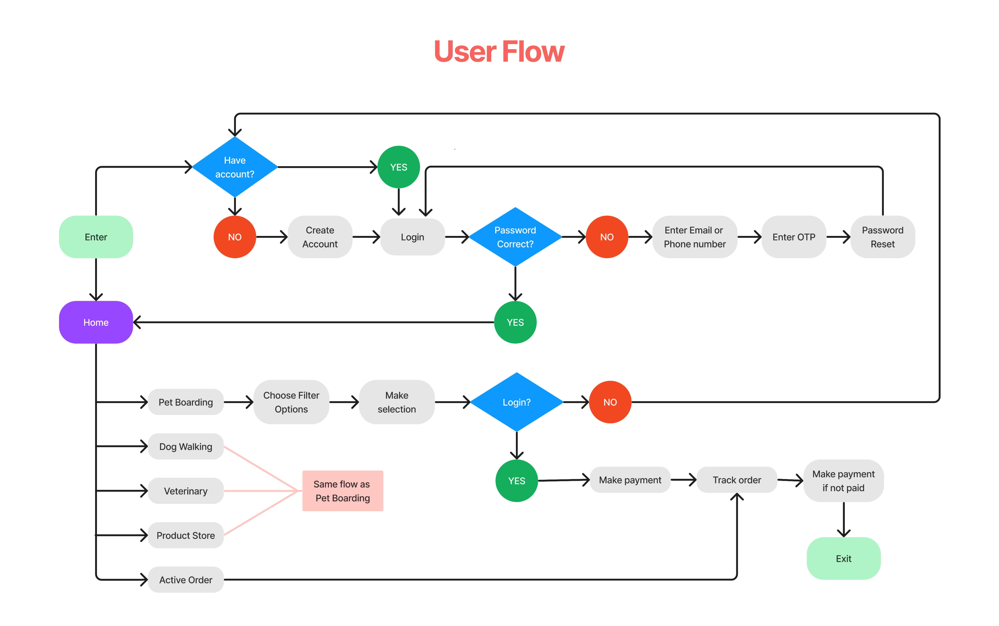
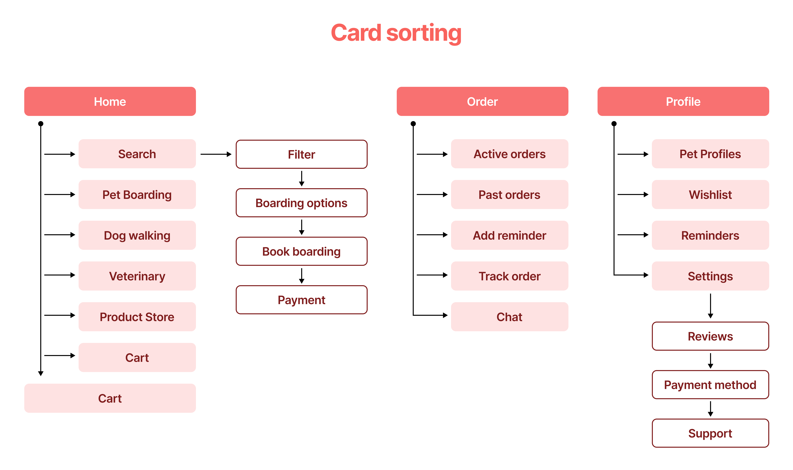

Animoo Pet Care mobile app
Maintaining a good work-life balance is already a challenge. People are chasing deadlines, traveling for work more often or stuck at work well past their office hours. In this process, their pets are losing out on the care they need.
A digital solution that brings all pet care services and products into one platform. An app that allows quick and easy booking of carefully vetted pet sitters and dog walkers, online vet consultation, along with a dedicated e-commerce section for pet care products
This is my personal project, as a graduate project for the Google UX Design certificate, I have personally carried out the entire product building process from start to finish. This project has received objectively positive reviews from Google as well as my fellow students.
The pet care market is a large and rapidly growing market globally, with the continuous growth of the veterinary industry. It is forecasted that the global pet care market value will reach over $200 billion by 2025. Currently, pet care products have also developed to meet the consumers' demand for organic, nutritional, and non-toxic products.
The most important thing in the pet care market is to enhance the focus on pet health and care, and the development of new products and services to meet the increasing consumer demand in this field.
I used an online search to find popular pet care apps and selected the 3 most popular for analysis. We then downloaded these apps and used their features to create a list of each app's key features, services, and products. Applications analyzed in this report include:

After analyzing the features, services and products of pet care apps and evaluate and compare competitors' marketing strategies, we obtained the following results:
Pet Coach:
* Strengths: Provides one-on-one veterinarian support to users, provides training guides, and shares pet care knowledge.
* Weaknesses: There were some reports of slow product development and inefficient customer support.
* Marketing strategies: Focused on providing free health and nutrition advice to clients through professional veterinarians and nutritionists. This helps PetCoach create a reputable and reliable image in the field of pet care and attract many customers who are looking for health and nutrition consulting services for their pets. However, the weakness of PetCoach is that they do not provide pet treatment services like Wag and Rover.
Rover:
* Strengths: Offers many features to help users find and book pet care services, including user reviews and contact information for users and service providers.
* Weaknesses: Costs are sometimes higher than other apps on the list.
* Marketing strategies: Focuses on providing a variety of pet care services such as walking, babysitting, and keeping pets in other people's homes during their owners' absence. Rover is also particularly focused on creating an online community to help pet owners find pet care services and interact with each other. Rover also provides tools to help pet owners manage their pet's health and vaccination information. Rover's strength is a professional pet care team and receives many positive reviews from customers. However, Rover's weakness is that its service is quite expensive compared to its competitors.
Wag:
* Strengths: There are a variety of services such as taking care, walking and walking with pets. Provide a lot of information about the service operators so that users can easily learn and choose.
* Weaknesses: Prices for services are often higher than those of competitors. There is no search feature by address or region.
* Marketing strategies: Focuses on providing pet walking services. They have a simple app to schedule walks and provide 24/7 customer service. Wag also provides tools to help pet owners manage their pet's health and vaccination information. Wag's strength is that it is more affordable than Rover and its more professional pet care team.
Detailed Research Plan
I started planning research for my project. This is just a plan based on my experience, if you have suggestions, please contact by email, I will be happy to listen.
Project background:
The project is to build a mobile application about pet care, which will provide users with information, recommendations, and booking services related to pet care. The application aims to be user-friendly and intuitive, providing pet owners with a convenient and reliable resource for their pets' needs.
Research Goals:
The main research goals of the project are:
* To understand the pet care needs, concerns, and behaviors of potential users
* To identify the features and functionalities that users expect from a pet care application
* To evaluate the usability and user experience of the pet care application prototype
* To determine the potential market demand and growth opportunities for the pet care application
Detailed Research Questions:
To achieve the research goals, the following detailed research questions will be addressed:
* What are the most common pet care needs and concerns among pet owners?
* How do pet owners currently obtain information and services related to pet care?
* What are the essential features and functionalities that users expect from a pet care application?
* How can the pet care application be designed to provide a personalized and user-friendly experience?
* What are the potential barriers or challenges that users may face when using the pet care application?
* What are the most effective marketing channels and strategies for promoting the pet care application?
Key Performance Indicators (KPIs):
The following KPIs will be used to measure the success of the pet care application:
* Number of downloads and active users
* User engagement and retention rate
* User satisfaction and NPS score
* Conversion rate of bookings and purchases
* Market share and competitive analysis
Methodology:
The research methodology will include a combination of qualitative and quantitative research methods, including:
* Online surveys to gather demographic and general information about pet owners and their pets
* In-depth interviews to gain deeper insights into users' pet care needs, concerns, and behaviors
* Usability testing to evaluate the pet care application's functionality and user experience
* Market research and competitive analysis to assess the potential demand and growth opportunities for the pet care application
Participants:
The participants will be pet owners who have at least one pet and use mobile devices for their daily activities. The sample size will be approximately 100 participants, including a diverse range of pet types, ages, and breeds.
Script of Questions:
The following KPIs will be used to measure the success of the pet care application:
* What kind of pet(s) do you have, and how long have you owned them?
* How do you currently obtain information and services related to pet care?
* What are the most important aspects of pet care for you?
* What features and functionalities would you expect from a pet care application?
* How do you think a pet care application could help you with your pet care needs?
* How would you rate the usability and user experience of the pet care application prototype?
Personas
After a rough plan, I did interviews with some of my animal-loving friends, some of whom could perhaps express their frustrations even better. both me.
It's so frustrating not being able to find all the information I need about taking care of my pet in one place. I have to search through so many websites and articles, and I'm never sure if I'm getting accurate or up-to-date information.
I wish there was an app that could give me personalized recommendations for my pet's needs. It's overwhelming trying to figure out what kind of food, toys, or training techniques are best for my specific pet. I want to feel confident that I'm providing the best care possible.
I also worry about the quality of care my pet is receiving when I have to rely on word-of-mouth recommendations for veterinary services, and I'm not sure if the staff at the clinic or hospital are truly qualified or experienced enough to handle my pet's needs.
I've seen a lot of complaints like this repeated throughout my emotional experience survey.
Obviously, the main goal is to create a convenient application, so that users can safely entrust their pets to another party, as well as be assured of the quality of veterinary products and workmanship.
Let's have a little fun with user stories :D

Next, I will visualize the user journey across all touchpoints of my app to understand where I can improve the user experience.

Ideate phase
The next step is to create a user flow, which is a visual representation of the steps that users will take to accomplish their goals within the app. By mapping out a user flow, I can identify potential roadblocks or areas where users may get stuck, and make adjustments to ensure a smooth and intuitive user experience.

Afterward, I using Card sorting technique used to organize and categorize information. Each representing a piece of content or functionality within the app, and then asking users to sort the cards into groups based on how they would expect to find them. This can help me understand how users think about the content and functionality of the app, and ensure that the information architecture is organized in a way that makes sense to them.

Based on the data collected during Research, I have wireframed and basic interface for the application. Then use usability testing techniques to check and test the features to come up with suitable modifications.